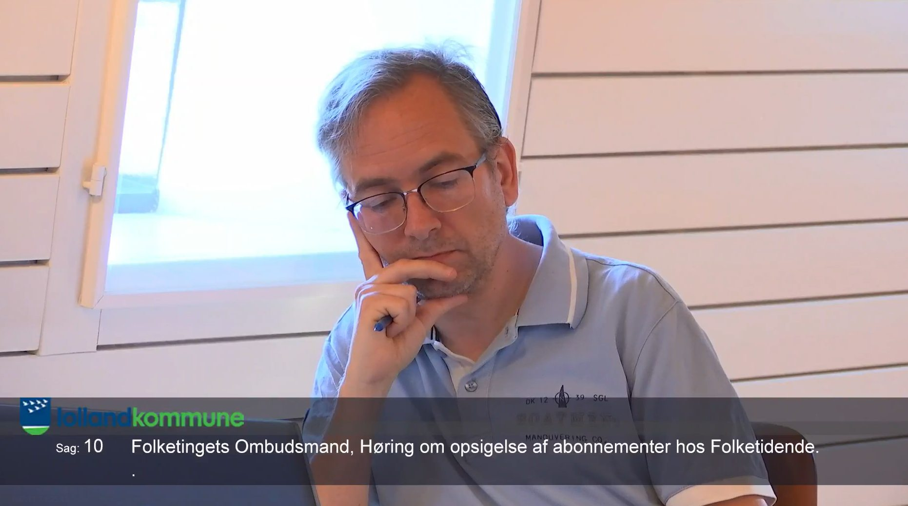
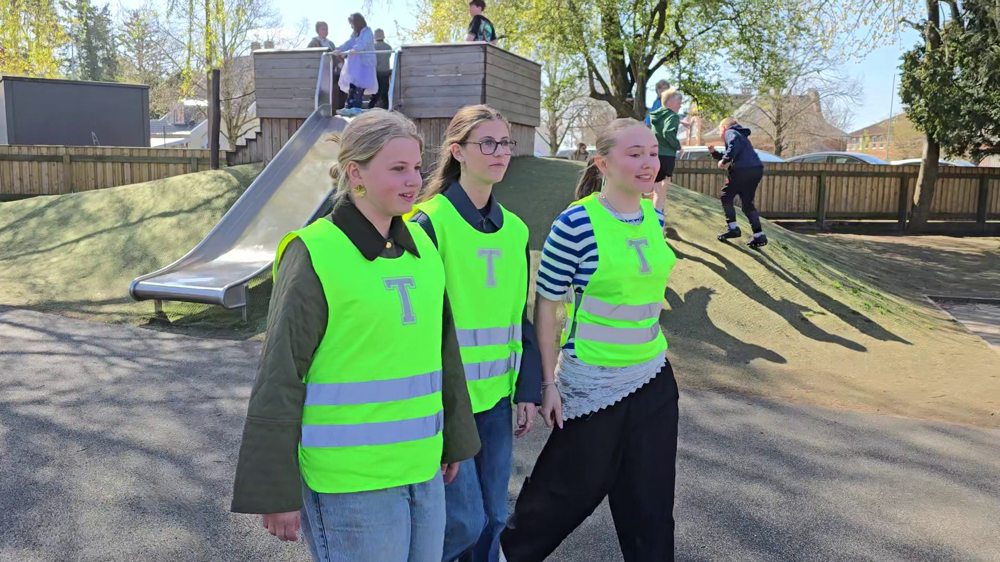
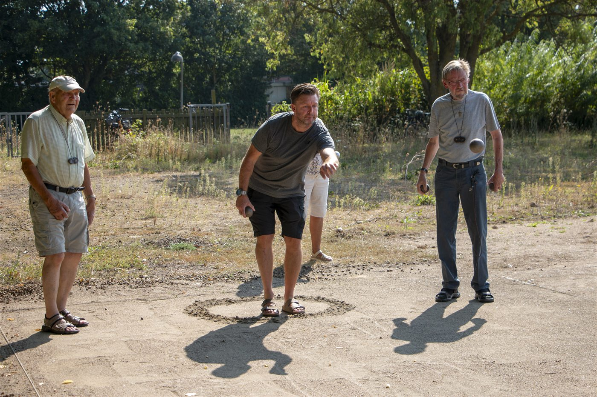

Da jeg gjorde comeback som dirigent
Et gensyn med Sankt Birgitta Skole blev også et gensyn med en verden, jeg har fået stor respekt for – og en påmindelse om, hvorfor trivsel aldrig bliver et emne, vi kan sætte punktum ved.
Her deler jeg tanker fra mere end 20 år som lokaljournalist – om historierne, menneskene, troværdigheden og det, der binder et lokalsamfund sammen.
Et gensyn med Sankt Birgitta Skole blev også et gensyn med en verden, jeg har fået stor respekt for – og en påmindelse om, hvorfor trivsel aldrig bliver et emne, vi kan sætte punktum ved.

Jeg har det bedst i skyggerne. Men indimellem ender kameraet alligevel med at pege den forkerte vej.

En refleksion om juniorgårdvagter, ansvar og hvorfor lidt ældre elever nogle gange kan være de stærkeste rollemodeller for de yngre.

Lokaljournalistik handler ikke kun om nyheder. Den handler også om nærhed, tillid og om at fortælle de historier, som et lokalsamfund genkender sig selv i.